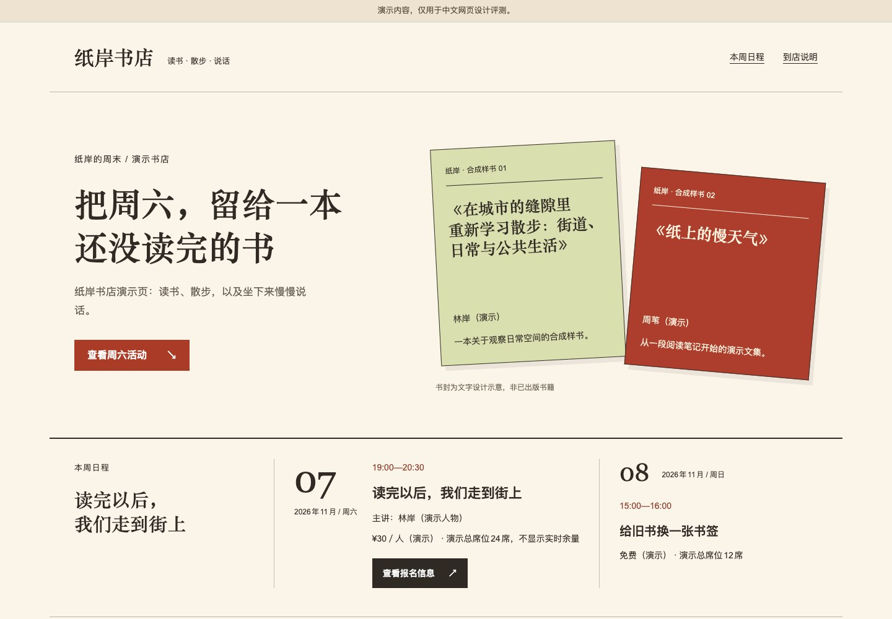
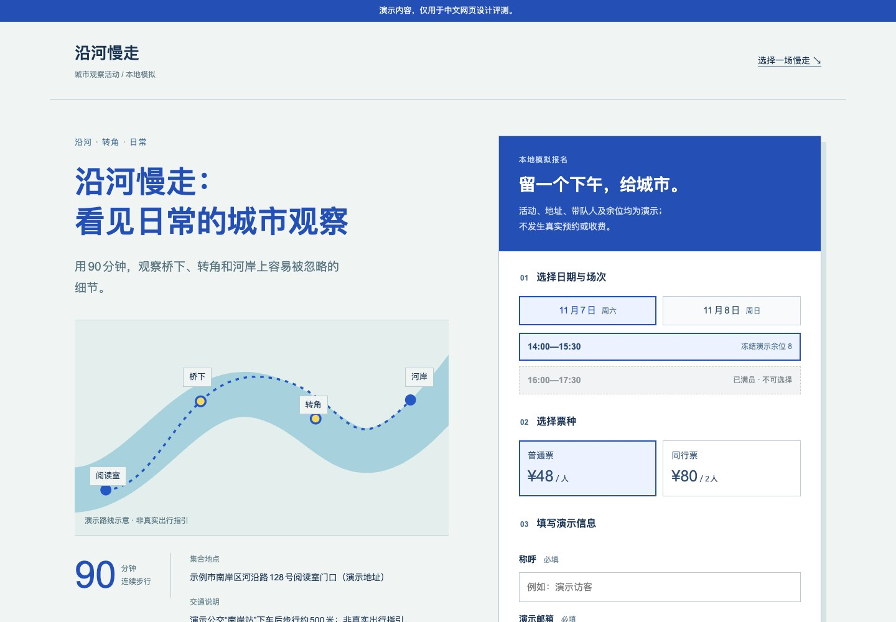
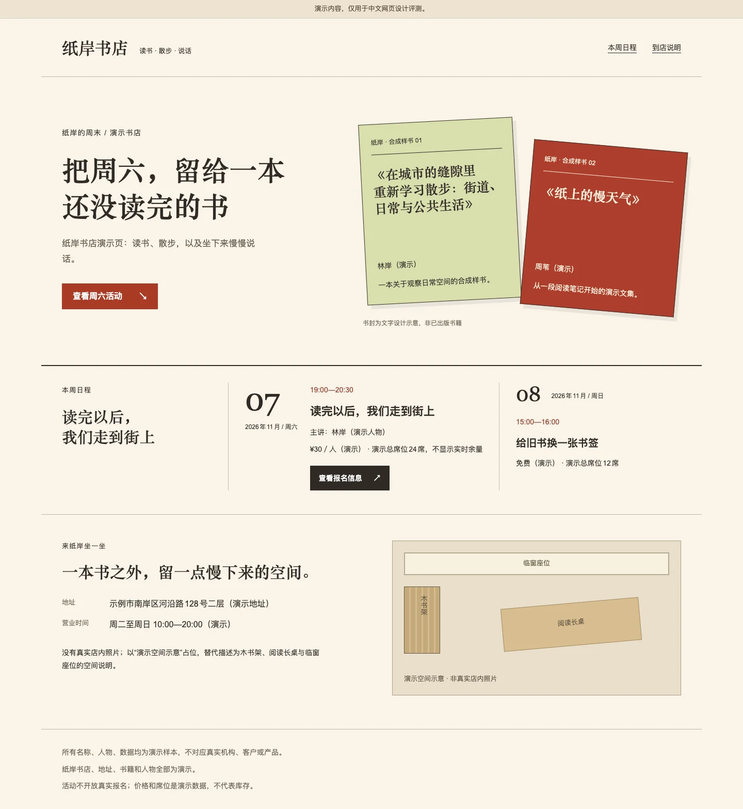

把选择，放回真实需要。
合桌 / 商品比较 / 章法条件
规格先有共同口径，界面才有选择的依据。

01 / 不同内容，不同面孔
工具、活动、阅读与比较，
各有自己的观看方式。
合桌 / 商品比较 / 章法条件
规格先有共同口径，界面才有选择的依据。

沿河慢走 / 本地模拟预约 / 章法条件
路线负责唤起向往，流程负责让人安心行动。
以上为真实页面截图，内容与业务均为合成演示。
你可以打开页面，继续看，也亲手试。
完整页面 / 纸岸书店
从第一眼到下一步，
看设计如何把整页连起来。

01 / 看见书籍成为主对象
02 / 决定日程接住行动
03 / 到达到店说明收尾
相同需求与内容，比较无本技能的原始产物和章法修订版。
保留完整内容与报名演示；包含后期视觉修订，不代表首次生成胜率。上图为局部概览。
02 / 设计发生在细节里
同一位置，一键切换前后。
标题的断行，窄屏的呼吸，看得更清楚。
正在读取同页修复前后的对比记录…
这里是同页面修复前后的比较；原始对照组保持不变，不作为独立模型胜率。
03 / 章法的判断
设计值得被检验，也值得被如实呈现。
04 / 把作品放回同一个问题
相同需求，三种条件。
逐页查看，自己判断。
读取后可切换设计条件，查看相同需求下的页面。
这里会展示实际生成的页面。索引不等于成品。
05 / 有章可循
章法提供判断的顺序，
不把每个页面变成同一个答案。
谁在阅读，先看什么，接下来做什么。每一处视觉决定，都应有内容上的理由。
从行长、断句到标点，从标题的重心到段落的间距，让阅读自然发生。
能打开不等于已验收。分别记录生成、技术检查与视觉审视，保留尚未完成的部分。
好内容，
值得被好好看见。
真实智能体试验同一需求下实际运行并保留的页面；生成结果仍需技术与视觉检查。
规则示意为解释设计方法而制作的示例，不作为技能效果的实验证据。
尚未制作已列入范围、尚无可查看成品。不会用示例页替代真实试验。
各条件按批次运行，组内共享上下文；加载技能不代表完整执行，省略步骤与额外修复见每题记录。“已生成”只说明页面已经产出；“技术已验证”也不代表视觉或人工验收通过。本展示不推断成功率。
把章法，带进你的项目。
支持 Codex 与 Claude Code · 新建、受限改版与只审阅